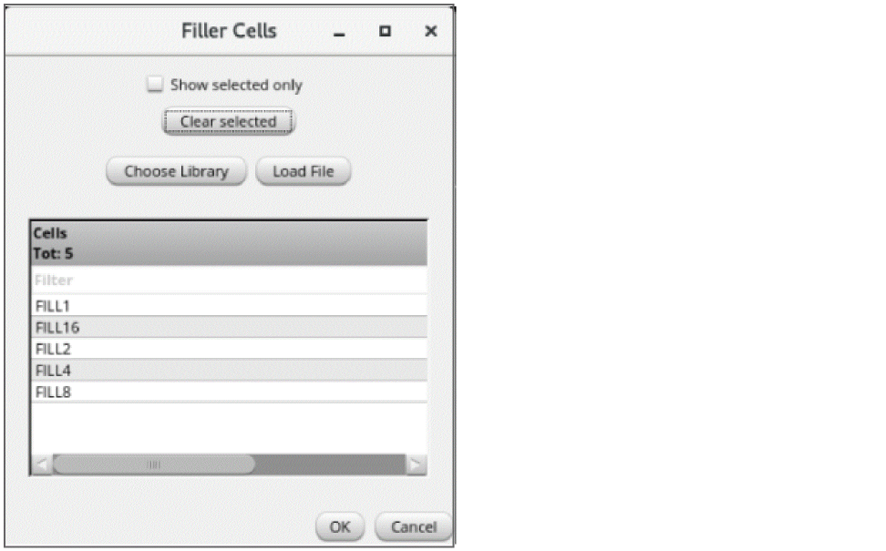

Adding Filler Cells During Automated Standard Cell Placement
Use the Filler Cells form to select the filler cells to be inserted after running the placer. To specify filler cell settings:
- Open the Place tab of the Auto P&R assistant in Standard Cell mode.
-
Select Add decap/filler cells and click Browse.
The Filler Cells form appears.
 -
From the Cells list, select the required cells to be used as filler cells. These are the cells with their component class set to
FILLER. - Click OK to close the form and go back to the Place tab of the Auto P&R assistant.
Filler cells settings are saved and are generated after running the automated standard cell placer.
Related Topics
Auto P&R Assistant User Interface for Standard Cell
Standard Cell Components Generated During Placement
Placing Standard Cells Automatically
Adding Boundary Cells During Automated Standard Cell Placement
Adding Tap Cells During Automated Standard Cell Placement
Return to top